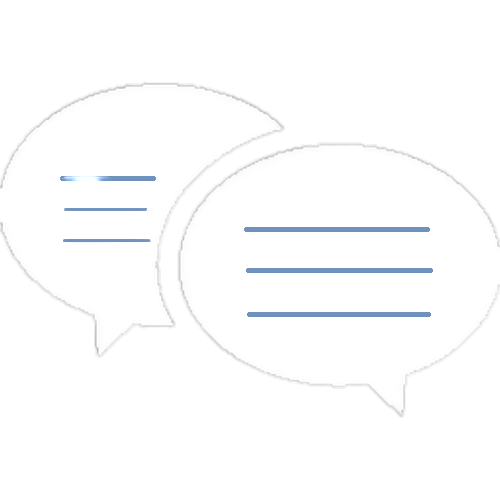

<nav class="navbar  fixed-top  navbar-light  w-100 py-8  page-header" >
    <div class="d-flex justify-content-between align-items-center w-100 bg-accent-violet">
        <div class="d-flex  align-items-center bg-accent-violet">
            <div class="navbar-brand">
                
            </div>
            <div class="nav-title text-center">
                <a class="org-name text-capitalize text-white text-large " routerLink="my-home"> 
                    corporate chat club
                </a>
            </div>
            <span class="ki ki-settings-fill text-white "></span>
        </div>
        <div class="d-flex page-header-left align-items-center pr-4">
            <i class="ki ki-bell ki-lg text-white mr-20"></i> 
            <div class="employee-profile-header ">
                <div class="profile profile-32">
                    <div class=" clear-margin clear-margin-r">
                          
                    </div>
                </div>
            </div>
            <div class="dropdown" dropdown>
                <a routerLink="user-profile" class="profile-name text-white m-2 text-capitalize">{{userName}}</a>
                <a class="icon-click" dropdownToggle id="dropdown-menu" aria-haspopup="true" aria-expanded="false">
                    <i class="ki ki-chevron-down"></i>
                </a>
                <ul class="dropdown-menu bg-white w-150 dropdown-menu-right" aria-labelledby="dropdown-menu" *dropdownMenu>
                    <li>
                        <a class="dropdown-item p-1" routerLink="../login-signup" (click)="logout()">
                            <i class="ki ki-exit"></i>
                            Logout
                        </a>
                    </li>
                </ul>
            </div>
        </div>
    </div>    
</nav>
